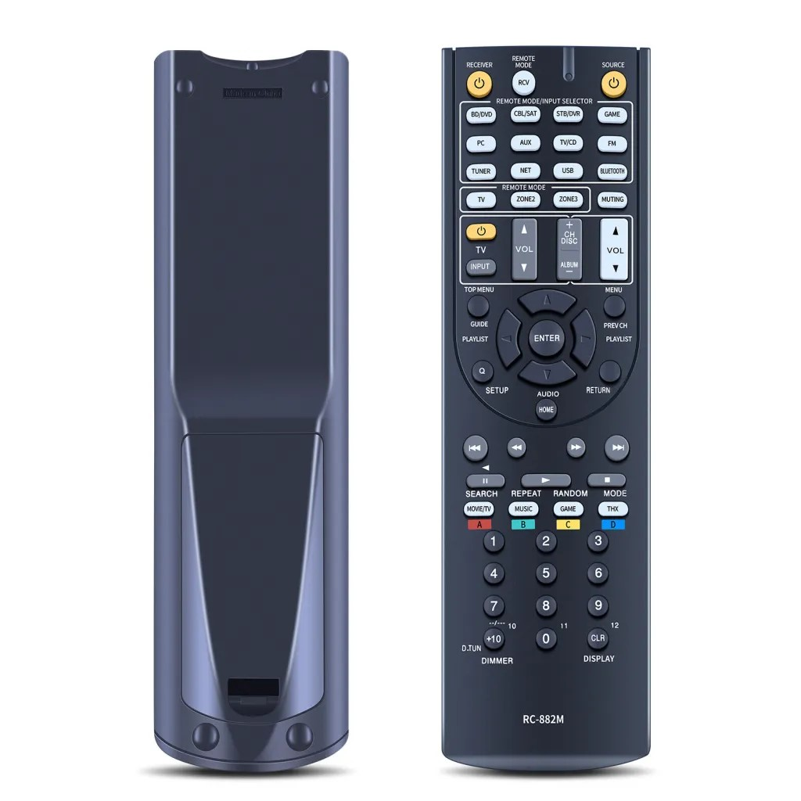
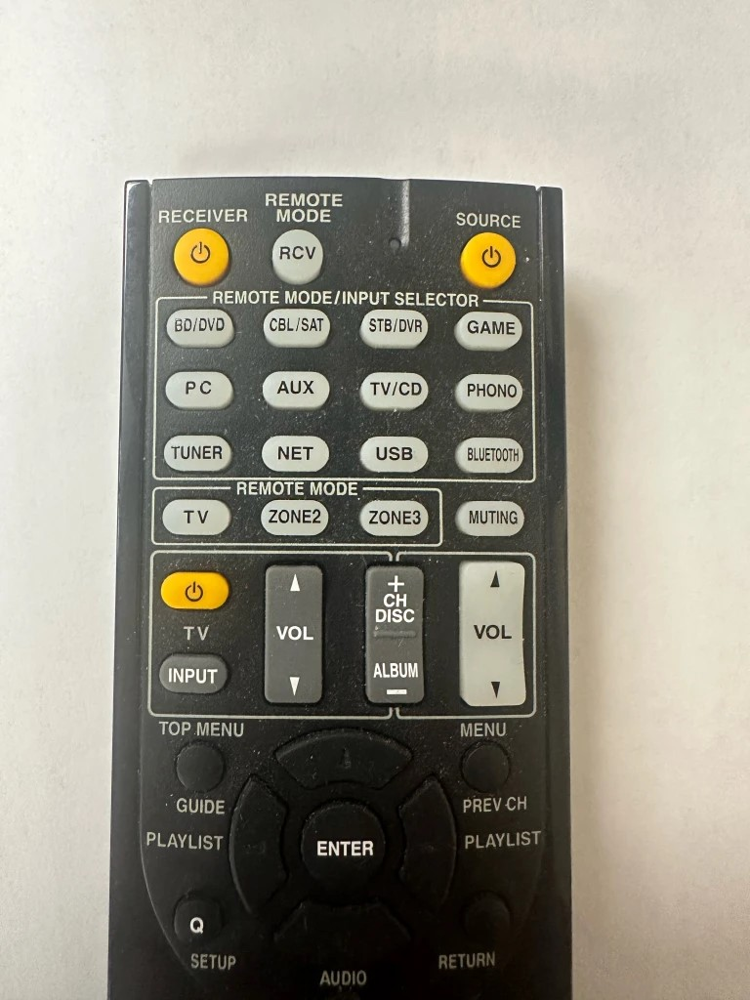

This is a quick reference guide to the conference room remote and how to switch between inputs
Today we will be working with the RC-882M shown below
Here is a closer look at the input selections
To select the correct input you want simply press the corresponding button listed below
If you have any questions feel free to email HelpDesk